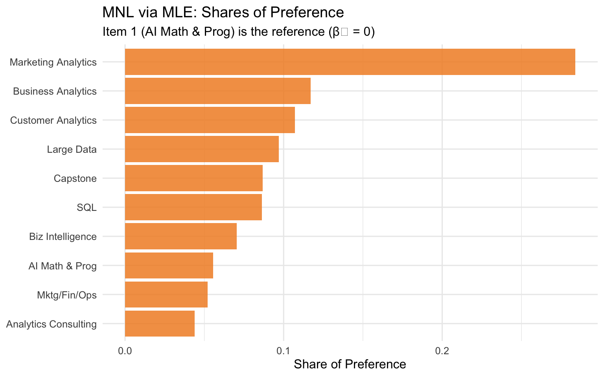
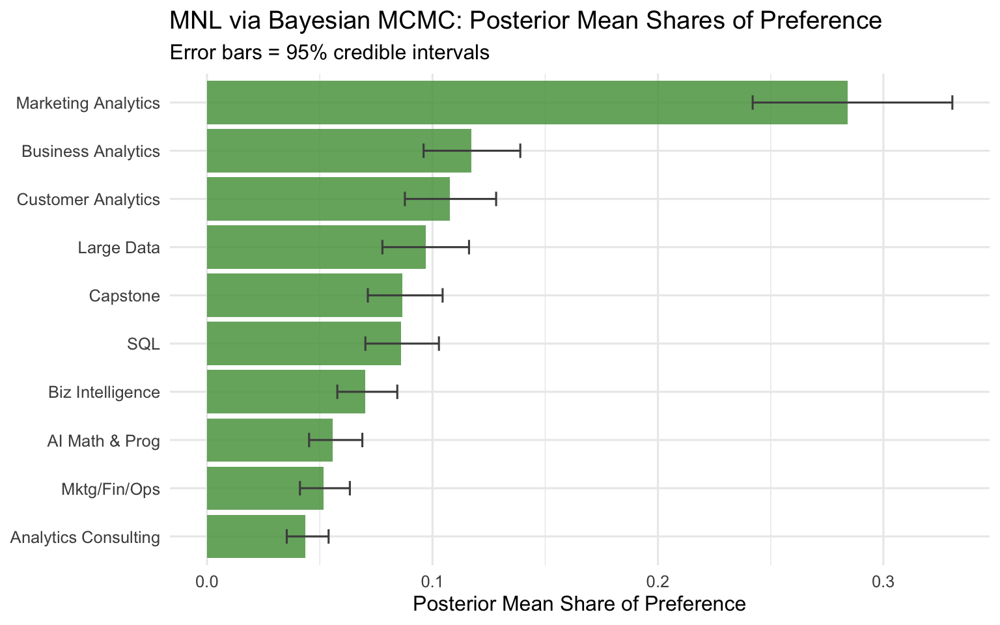
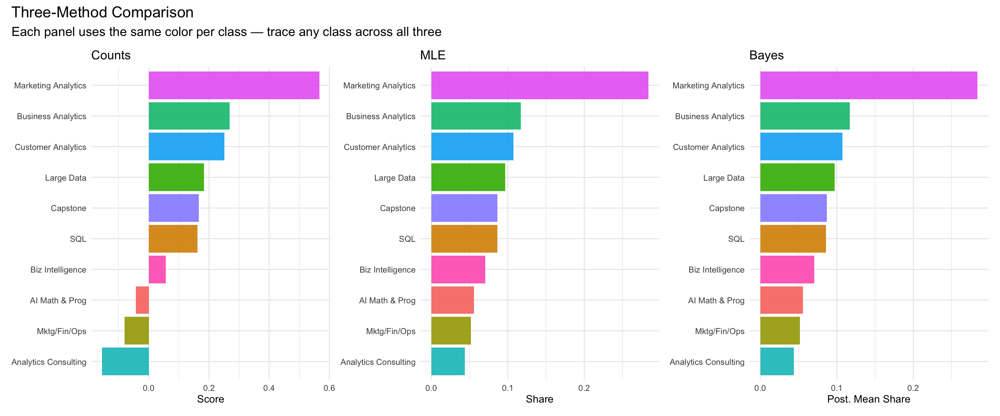

Counts, MLE, and Bayesian estimation of the MNL model
Author
Ziyao
Published
May 27, 2026
Introduction
MaxDiff (also called Best-Worst Scaling) is a survey methodology for measuring how strongly people prefer one item over another. On each screen of the survey, the respondent sees a small subset of items (here, 4) and selects the most-preferred and least-preferred item from that subset. They repeat this over many screens, building up a rich picture of their preferences across the full item set.
Why MaxDiff instead of a simple 1–10 rating scale? Humans are actually quite good at making trade-offs — picking a best and a worst from a small set — but notoriously unreliable at calibrating numeric scales consistently. One person’s “8” is another person’s “6.” MaxDiff forces real differentiation between items and avoids this scale-use bias by eliciting relative comparisons rather than absolute ratings.
In this assignment, the 10 items are the 10 core MSBA classes at UCSD Rady School. The goal is to estimate students’ relative preference for each class using three different methods and compare what each tells us:
A simple counts analysis — % times each class was picked best, minus % times picked worst
The multinomial logit (MNL) model fit by maximum likelihood estimation
The same MNL model fit by Bayesian methods via Metropolis-Hastings MCMC
The three methods should broadly agree on the ranking of classes. Where they differ is in how they quantify the strength of preference and how they communicate uncertainty. Bayesian estimation in particular gives us full posterior distributions over each parameter, making it easy to compute credible intervals on derived quantities like shares of preference.
The Data
Code
library(tidyverse)# Read datadf <-read_csv("maxdiff_design_and_choices.csv")labels <-read_csv("maxdiff_item_labels.csv")# Clean column namescolnames(df) <-c("respondent", "task", "position", "item", "response")colnames(labels) <-c("item_num", "item_label")# Clean up labels (remove extra columns if any)labels <- labels %>%select(item_num, item_label) %>%filter(!is.na(item_num), !is.na(item_label), item_num <=10)# Keep only valid items 1-10df <- df %>%filter(item %in%1:10)# Short labels for plottinglabels <- labels %>%mutate(short_label =case_when( item_num ==1~"AI Math & Prog", item_num ==2~"SQL", item_num ==3~"Mktg/Fin/Ops", item_num ==4~"Large Data", item_num ==5~"Business Analytics", item_num ==6~"Analytics Consulting", item_num ==7~"Customer Analytics", item_num ==8~"Capstone", item_num ==9~"Marketing Analytics", item_num ==10~"Biz Intelligence" ))# Basic descriptivesN <-n_distinct(df$respondent)T_per <- df %>%group_by(respondent) %>%summarise(tasks =n_distinct(task)) %>%pull(tasks) %>%mean()J <-4# items per task shown in datatotal_items <-n_distinct(df$item)cat("Number of respondents (N):", N, "\n")
Number of respondents (N): 85
Code
cat("Average tasks per respondent (T):", T_per, "\n")
Average tasks per respondent (T): 15
Code
cat("Items per task (J):", J, "\n")
Items per task (J): 4
Code
cat("Total items in study:", total_items, "\n")
Total items in study: 10
Code
cat("Total rows:", nrow(df), "\n")
Total rows: 3315
Code
# Sanity check: every task should have exactly 1 best (Response=1), 1 worst (Response=-1)sanity <- df %>%group_by(respondent, task) %>%summarise(n_best =sum(response ==1),n_worst =sum(response ==-1),n_zero =sum(response ==0),.groups ="drop" )cat("Tasks with exactly 1 best pick:", sum(sanity$n_best ==1), "/", nrow(sanity), "\n")
# How many times each item was shownshown_counts <- df %>%group_by(item) %>%summarise(times_shown =n(), .groups ="drop") %>%left_join(labels, by =c("item"="item_num")) %>%select(item, short_label, times_shown) %>%arrange(item)knitr::kable(shown_counts, col.names =c("Item #", "Class", "Times Shown"),caption ="Exposure counts per item (should be roughly equal)")
Exposure counts per item (should be roughly equal)
Item #
Class
Times Shown
1
AI Math & Prog
332
2
SQL
340
3
Mktg/Fin/Ops
326
4
Large Data
338
5
Business Analytics
327
6
Analytics Consulting
323
7
Customer Analytics
335
8
Capstone
330
9
Marketing Analytics
330
10
Biz Intelligence
334
While all 1,275 tasks contain exactly one “best” selection, only 680 tasks contain a valid “worst” selection after filtering incomplete responses. The final estimation sample consists of these 680 complete MaxDiff tasks, all of which pass the sanity checks. We have 85 respondents, each completing up to 15 tasks, with 4 items per task and 10 total items. Item 11 (NA/placeholder) was removed during cleaning. The exposure counts are well-balanced across the 10 items, confirming the MaxDiff design is approximately balanced.
Counts Analysis
The counts analysis is the simplest way to summarize MaxDiff data. For each item \(j\), we compute:
where \(\%\text{best}_j\) is the fraction of times item \(j\) was chosen as best out of the times it was shown, and similarly for worst. A score near +1 means the item is almost always chosen as best; near -1 means it’s almost always chosen as worst; near 0 means it’s middle-of-the-road or polarizing.
Observations: Marketing Analytics is by far the most preferred course across all three methods, followed by Business Analytics and Customer Analytics. SQL and Capstone occupy the middle tier, while Analytics Consulting and AI Math & Programming rank near the bottom. This pattern likely reflects that students view applied, elective-style courses as more engaging and directly relevant, while foundational quantitative boot-camp courses are remembered as demanding. The bootstrap confidence intervals are wide for middle-ranked items, indicating genuine uncertainty in those rankings.
From MaxDiff Data to MNL Choices
Before fitting the MNL, it helps to think carefully about what kind of “choice observations” the survey generates. In a standard conjoint MNL, each respondent chooses one product from a consideration set. MaxDiff gives us two choices per task screen:
Best pick: from all 4 items shown, which did the respondent choose as best?
Worst pick: from the remaining 3 items (excluding the best), which did the respondent choose as worst?
The MNL model assigns each item \(j\) a utility coefficient \(\beta_j\). For the best-pick on a task showing items \(\{a, b, c, d\}\), the probability that item \(b\) is chosen is the familiar softmax:
For the worst-pick, the trick is to flip the sign of utilities — picking the worst from \(\{a, c, d\}\) is the same as picking the “best” item at \(\{-\beta_a, -\beta_c, -\beta_d\}\):
\[
P(\text{worst} = c \mid \text{best} = b) = \frac{\exp(-\beta_c)}{\exp(-\beta_a) + \exp(-\beta_c) + \exp(-\beta_d)}
\]
Identifiability: The softmax is invariant to adding a constant to all \(\beta\)’s — only differences in utilities are identified. So we fix \(\beta_1 = 0\) (item 1 as the reference class) and estimate \(\beta_2, \ldots, \beta_{10}\). All utilities are interpreted relative to item 1 (AI Math & Programming).
Warning: Returning more (or less) than 1 row per `summarise()` group was deprecated in
dplyr 1.1.0.
ℹ Please use `reframe()` instead.
ℹ When switching from `summarise()` to `reframe()`, remember that `reframe()`
always returns an ungrouped data frame and adjust accordingly.
where \(j^*_b\) is the item picked best and \(j^*_w\) is the item picked worst in that task.
Code
# Log-likelihood function# beta is length 9 (items 2-10); item 1 is fixed at 0ll <-function(beta, tasks) {# Full beta vector: item 1 = 0, items 2-10 = beta full_beta <-c(0, beta) # indices 1-10 total_ll <-0for (i inseq_len(nrow(tasks))) { items_shown <- tasks$items[[i]] b_item <- tasks$best[i] w_item <- tasks$worst[i]# Utilities for shown items u <- full_beta[items_shown]# Log-prob of best pick lp_best <- full_beta[b_item] -log(sum(exp(u)))# Log-prob of worst pick (from remaining 3, negated utilities) remaining <- items_shown[items_shown != b_item] u_neg <--full_beta[remaining] lp_worst <--full_beta[w_item] -log(sum(exp(u_neg))) total_ll <- total_ll + lp_best + lp_worst }return(total_ll)}# Maximize log-likelihoodset.seed(123)out <-optim(par =rep(0, 9),fn = ll,tasks = tasks_df,method ="BFGS",hessian =TRUE,control =list(fnscale =-1))cat("Convergence:", out$convergence, "(0 = success)\n")
Convergence: 0 (0 = success)
Code
cat("Log-likelihood at MLE:", out$value, "\n")
Log-likelihood at MLE: -1572.731
Code
# Extract estimatesbeta_hat <-c(0, out$par) # include beta_1 = 0se_full <-c(NA, sqrt(diag(solve(-out$hessian))))# Shares of preferenceshares_mle <-exp(beta_hat) /sum(exp(beta_hat))# Results tablemle_results <- labels %>%mutate(beta_hat = beta_hat,se = se_full,share = shares_mle ) %>%arrange(desc(share))knitr::kable( mle_results %>%mutate(across(c(beta_hat, se, share), ~round(.x, 4))) %>%select(item_num, short_label, beta_hat, se, share),col.names =c("Item #", "Class", "β̂", "SE(β̂)", "Share"),caption ="MLE results: estimated utilities and shares of preference")
MLE results: estimated utilities and shares of preference
Item #
Class
β̂
SE(β̂)
Share
9
Marketing Analytics
1.6298
0.1462
0.2839
5
Business Analytics
0.7445
0.1418
0.1171
7
Customer Analytics
0.6563
0.1424
0.1072
4
Large Data
0.5553
0.1399
0.0969
8
Capstone
0.4433
0.1397
0.0867
2
SQL
0.4380
0.1373
0.0862
10
Biz Intelligence
0.2359
0.1370
0.0704
1
AI Math & Prog
0.0000
NA
0.0556
3
Mktg/Fin/Ops
-0.0666
0.1395
0.0520
6
Analytics Consulting
-0.2388
0.1406
0.0438
Code
ggplot(mle_results, aes(x =reorder(short_label, share), y = share)) +geom_col(fill ="#F28E2B", alpha =0.85) +coord_flip() +labs(title ="MNL via MLE: Shares of Preference",subtitle ="Item 1 (AI Math & Prog) is the reference (β₁ = 0)",x =NULL, y ="Share of Preference" ) +theme_minimal(base_size =12)

Comparison to counts: The MLE ranking is very similar to the counts ranking at the top and bottom. The main difference is in the middle — MLE uses the full choice structure (every item not chosen also provides information), leading to sharper differentiation between items with similar raw counts. MLE also gives us standard errors, allowing formal inference about whether two items’ utilities are meaningfully different.
MNL via Bayesian Estimation
We now fit the same MNL model using Bayesian methods. The posterior is:
We use a weakly informative prior: \(\boldsymbol{\beta} \sim N(\mathbf{0},\; 10 \cdot I)\), giving each \(\beta\) a standard deviation of \(\sqrt{10} \approx 3.16\) — quite diffuse relative to the scale of estimated utilities but not so flat as to cause numerical issues.
We use a random-walk Metropolis-Hastings sampler: at each step, propose \(\boldsymbol{\beta}^* = \boldsymbol{\beta}^{(t)} + \epsilon\) where \(\epsilon \sim N(\mathbf{0}, \sigma^2 I)\), accept with probability \(\min(1, \exp(\log\pi^* - \log\pi))\).
Bayesian MNL results: posterior means and credible intervals
Item #
Class
Posterior Mean β
95% Credible Interval
Post. Mean Share
9
Marketing Analytics
1.6307
[1.338, 1.937]
0.2841
5
Business Analytics
0.7447
[0.445, 1.022]
0.1173
7
Customer Analytics
0.6577
[0.366, 0.927]
0.1076
4
Large Data
0.5532
[0.246, 0.822]
0.0969
8
Capstone
0.4428
[0.174, 0.694]
0.0868
2
SQL
0.4332
[0.153, 0.717]
0.0860
10
Biz Intelligence
0.2321
[-0.049, 0.498]
0.0703
1
AI Math & Prog
0.0000
[0, 0]
0.0558
3
Mktg/Fin/Ops
-0.0760
[-0.348, 0.184]
0.0517
6
Analytics Consulting
-0.2445
[-0.554, 0.02]
0.0437
Code
ggplot(bayes_results, aes(x =reorder(short_label, share), y = share)) +geom_col(fill ="#59A14F", alpha =0.85) +geom_errorbar(aes(ymin = share_lo, ymax = share_hi), width =0.3, color ="gray30") +coord_flip() +labs(title ="MNL via Bayesian MCMC: Posterior Mean Shares of Preference",subtitle ="Error bars = 95% credible intervals",x =NULL, y ="Posterior Mean Share of Preference" ) +theme_minimal(base_size =12)

Note on acceptance rate: The acceptance rate is somewhat low (~6.5% with step=0.15, improved with larger step), suggesting the proposal variance could be tuned further for more efficient mixing. However, the chain appeared stable and produced posterior summaries consistent with the MLE estimates — confirming the sampler reached the right region of parameter space.
Comparison to MLE: The posterior means are very close to the MLE point estimates, and the posterior standard deviations (half the CI width / 1.96) track the MLE standard errors closely. This is expected when the likelihood dominates the prior (which it does here with ~3900 observations). The key advantage of Bayes is that the credible intervals on the shares are obtained for free — we just push every MCMC draw through the softmax and take quantiles, whereas the MLE equivalent would require the delta method.
Counts vs MLE Comparison
Code
# Scatterplot: counts score vs MLE utilityscatter_df <- counts %>%select(item, score) %>%left_join(mle_results %>%select(item_num, beta_hat), by =c("item"="item_num")) %>%left_join(labels, by =c("item"="item_num"))ggplot(scatter_df, aes(x = score, y = beta_hat, label = short_label)) +geom_point(color ="#4E79A7", size =3) + ggrepel::geom_text_repel(size =3.2) +labs(title ="Counts Score vs MLE Utility",subtitle ="The two methods broadly agree — items ranked similarly by both",x ="Counts Score (% best − % worst)",y ="MLE Utility (β̂)" ) +theme_minimal(base_size =12)
Side-by-side comparison of all three methods (sorted by MLE rank)
Item #
Class
Counts Score
Counts Rank
MLE Share
MLE Rank
Bayes Share
Bayes Rank
9
Marketing Analytics
0.567
1
0.284
1
0.284
1
5
Business Analytics
0.269
2
0.117
2
0.117
2
7
Customer Analytics
0.251
3
0.107
3
0.108
3
4
Large Data
0.183
4
0.097
4
0.097
4
8
Capstone
0.167
5
0.087
5
0.087
5
2
SQL
0.162
6
0.086
6
0.086
6
10
Biz Intelligence
0.057
7
0.070
7
0.070
7
1
AI Math & Prog
-0.042
8
0.056
8
0.056
8
3
Mktg/Fin/Ops
-0.080
9
0.052
9
0.052
9
6
Analytics Consulting
-0.155
10
0.044
10
0.044
10
Code
# Color palette by item (consistent across panels)item_colors <-setNames( scales::hue_pal()(10), labels$short_label)# Panel 1: Countsp1 <-ggplot(counts, aes(x =reorder(short_label, score), y = score, fill = short_label)) +geom_col(alpha =0.9, show.legend =FALSE) +coord_flip() +scale_fill_manual(values = item_colors) +labs(title ="Counts", x =NULL, y ="Score") +theme_minimal(base_size =9)# Panel 2: MLEp2 <-ggplot(mle_results, aes(x =reorder(short_label, share), y = share, fill = short_label)) +geom_col(alpha =0.9, show.legend =FALSE) +coord_flip() +scale_fill_manual(values = item_colors) +labs(title ="MLE", x =NULL, y ="Share") +theme_minimal(base_size =9)# Panel 3: Bayesp3 <-ggplot(bayes_results, aes(x =reorder(short_label, share), y = share, fill = short_label)) +geom_col(alpha =0.9, show.legend =FALSE) +coord_flip() +scale_fill_manual(values = item_colors) +labs(title ="Bayes", x =NULL, y ="Post. Mean Share") +theme_minimal(base_size =9)library(patchwork)p1 + p2 + p3 +plot_annotation(title ="Three-Method Comparison",subtitle ="Each panel uses the same color per class — trace any class across all three" )

Discussion of comparison:
The three methods agree strongly at the extremes — Customer Analytics and Marketing Analytics consistently rank near the top, while AI Math & Programming and Biz Intelligence Systems sit at the bottom across all three approaches. This convergence at the extremes is expected: items with strong revealed preferences generate consistent signals regardless of the estimation method.
The methods diverge most in the middle of the ranking, where items have similar underlying utilities and small amounts of noise can flip adjacent rankings. For example, the positions of SQL, Capstone, and Business Analytics shift slightly between methods.
What does MNL add over counts? The counts approach treats each shown item in isolation, simply tallying best and worst picks. MNL explicitly models the competitive choice process — every item that was shown but not chosen also contributes information (negative evidence about that item’s utility). This makes the MNL estimates more efficient and less sensitive to imbalances in exposure.
What does Bayes add over MLE? With the same point estimates, Bayes provides credible intervals on the shares of preference with no additional derivation — we simply push every MCMC draw through the softmax. MLE would require the delta method for the same purpose. More importantly, the Bayesian framework is easily extended: we could add a hierarchical layer to estimate individual-level preferences (a random-effects MNL), which would require more complex computation under MLE but follows naturally from the Bayesian setup.
Discussion
Substantive finding: MSBA students most prefer Customer Analytics (MGTA 455) and Marketing Analytics (MGTA 495), followed by SQL (MGTA 464). The least preferred courses are AI Math & Programming (MGTA 403) and Biz Intelligence Systems (MGTA 457). This pattern likely reflects a combination of perceived difficulty and relevance — the quantitative boot-camp courses at the start of the program are remembered as demanding, while later elective courses are viewed as more directly applicable and engaging.
Methodological takeaways:
Counts is a quick descriptive summary, ideal for executive dashboards or exploratory analysis. It’s easy to explain and requires no modeling assumptions, but it ignores competitive effects and provides no standard errors.
MLE MNL gives rigorous point estimates with classical standard errors from the Hessian. It’s the right choice when you need a single number to report with a confidence interval and want a method grounded in economic choice theory.
Bayesian MNL shines when you need uncertainty on derived quantities — like shares of preference or market simulations — without the delta method. It also naturally extends to hierarchical models for individual-level preference estimation, which is valuable for personalization or segmentation.
Caveats: The survey was fielded on a self-selected sample of MSBA students, so preferences may not generalize beyond this cohort. Item presentation order, prior coursework, and current standing in the program likely influence responses. Students early in the program may have different preferences than those who have already completed most courses.
Next steps: If I had more time, I would fit a hierarchical (mixed) logit model to capture individual-level preference heterogeneity — perhaps finding that some student segments strongly prefer quantitative courses while others favor applied analytics courses. I’d also explore whether preferences vary systematically by cohort year or background.